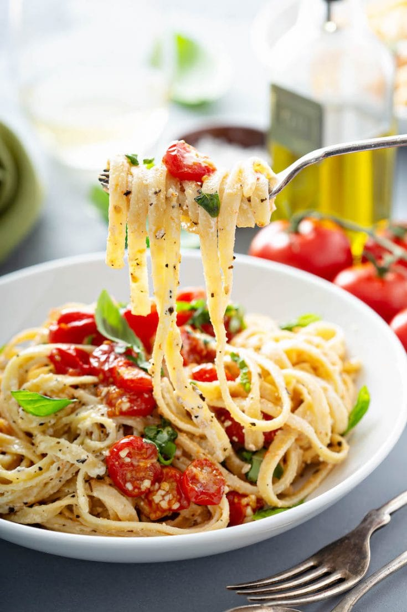

Roasted Cherry Tomato Pasta

Description
Roasting enhances the flavors of any vegetable, but seems to add a wonderful, rich
sweetness when done with cherry tomatoes. This recipe takes that sweetness,
complements it with fresh herbs and a touch of heat from red pepper flakes, with some
low-fat ricotta to smooth it all out. I topped it with some salty, nutty Pecorino
cheese.
Per Serving:
347 calories; protein 17.9g; carbohydrates 49.3g; fat 10.2g; cholesterol 27.5mg; sodium 504.4mg.
Ingredients
- 2 pound red cherry tomatoes, halved
- 1/2 pound tomotoes, roughly chopped
- 3 cloves garlic, thinly sliced
- 3 tablespoons chicken broth
- 1 tablespoon olive oil
- 1 tablespoon balsamic vinegar
- 1 teaspoon red pepper flakes
- 3/4 teaspoon salt
- 1/2 teaspoon freshly ground black pepper
- 1/4 cup julienned fresh basil leaves
- 2 tablespoons chopped flat-leafparsley
- 1 tablespoon chopped fresh oregano
- 12 ounces whole wheat linguine
- 1/2 (16 ounce) container low-fat ricotta cheese
- 1/2 cup finely shredded Pecorino Romano cheese
Directions
-
Preheat the oven to 350 degrees F (175 degrees C).
-
Combine all tomatoes, garlic, chicken broth, olive oil, balsamic vinegar, red pepper flakes, salt, and pepper
in a large, glass baking dish; toss to coat.
-
Roast in the middle of the preheated oven, stirring regularly, until tomatoes are tender, about 45 minutes.
Remove from the oven and stir in basil, parsley, and oregano.
-
When the tomatoes have been roasting for about 35 minutes, bring a large pot of lightly salted water to a
boil. Cook linguine at a boil until tender yet firm to the bite, 5 to 7 minutes (cook for 2 minutes less than
package directions.) Drain and return to the pot.
-
Add the roasted tomatoes and herbs to the linguine and cook over medium-low heat for 2 minutes. Add ricotta
cheese and stir until melted and smooth.
-
Serve topped with Pecorino Romano cheese.